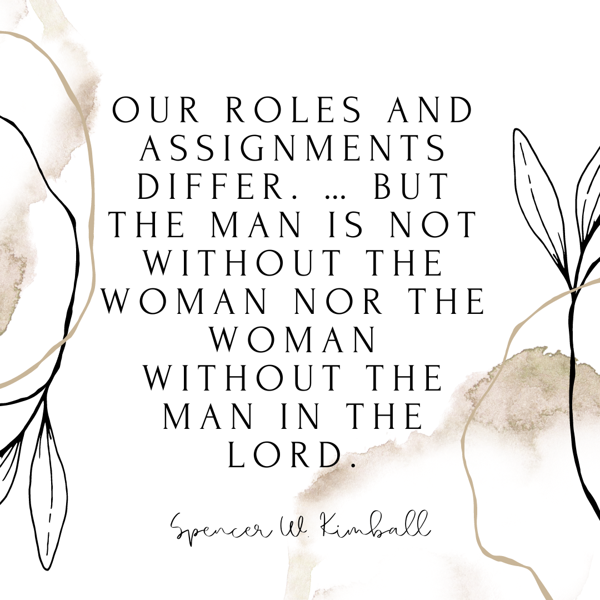

Equal Partners
Equality between genders is often mistaken to mean that they are identical.
The roles and responsibilities outlined in The Family: A Proclamation to the
World are different for men and women. Before outlining those responsibilities,
it is essential to understand that men and women were created differently by
Heavenly Father. The Proclamation states, “Gender is an essential characteristic
of individual premarital, mortal, and eternal identity and purpose.” There are
some responsibilities that are set upon both husband and wife, such as rearing
their children in “love and righteousness”, providing for their needs physically
and spiritually, teaching them, being law-abiding citizens, following the commandments,
and honoring their marriage with “complete fidelity”.
The Proclamation outlines the specific, divine roles of mothers and fathers. It states,
“By divine design, fathers are to preside over their families in love and righteousness
and are responsible to provide the necessities of life and protection for their families.
Mothers and primarily responsible for the nurture of their children.” Neither the husband
nor the wife has a more essential job than the other. Equal partnership in a marriage does
not mean identical roles, it means their roles are of equal importance. Elder Earl C. Tingey
stated, “You must not misunderstand what the Lord meant when Adam was told he was to have a
helpmeet. A helpmeet is a companion suited to or equal to [the other]. [They] walk side
by side … not one before or behind the other. A helpmeet results in an absolute equal
partnership between a husband and a wife. Eve was to be equal to Adam as a husband and
wife are to be equal to each other.”
